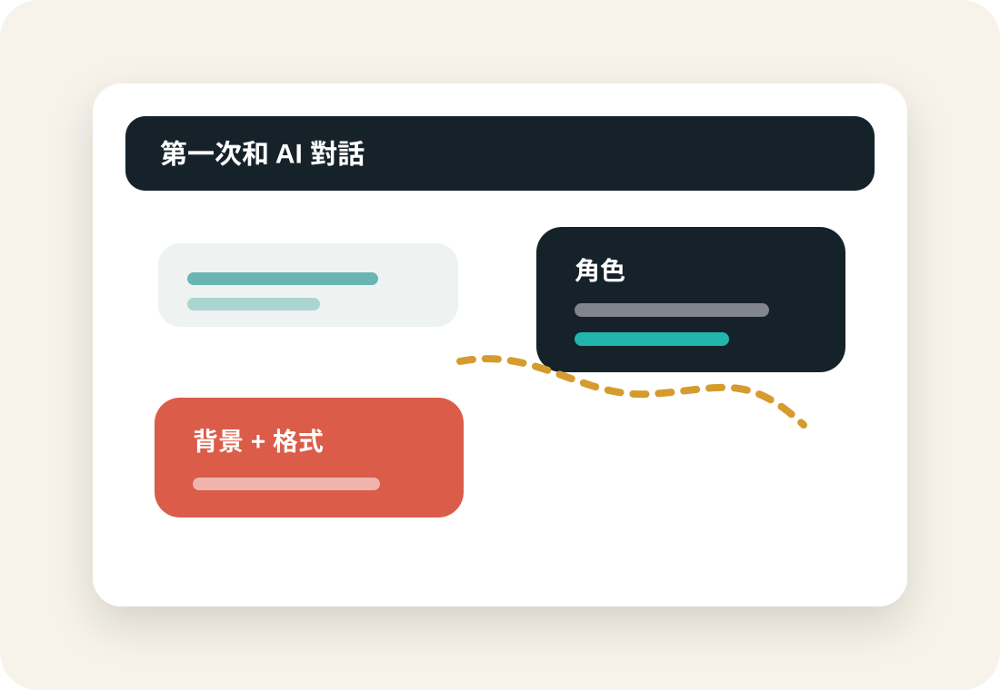
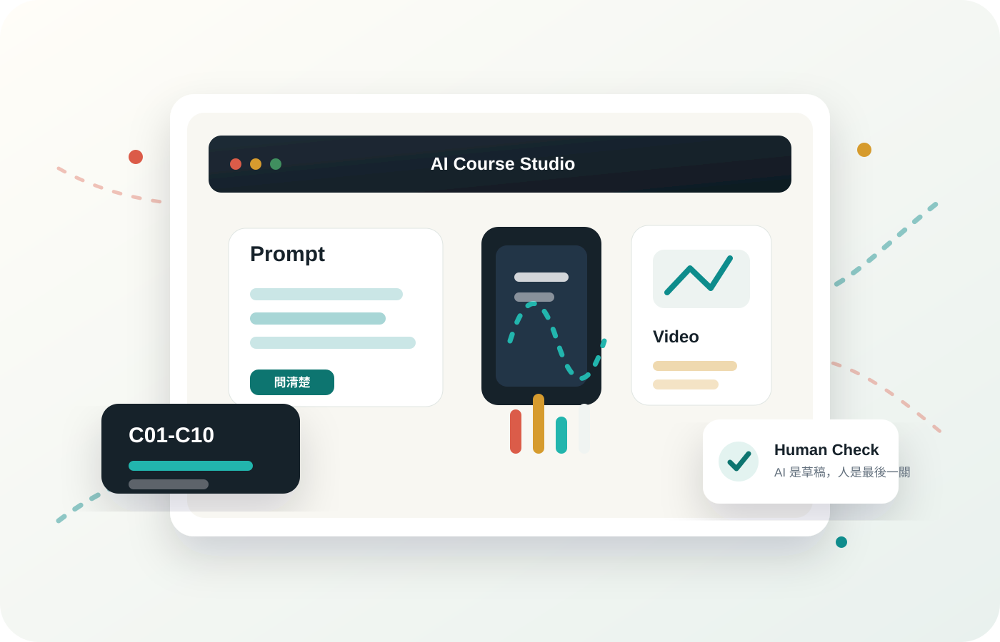
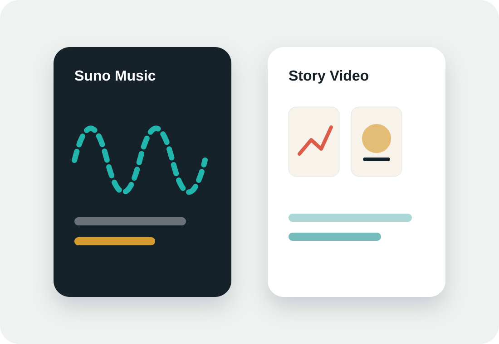
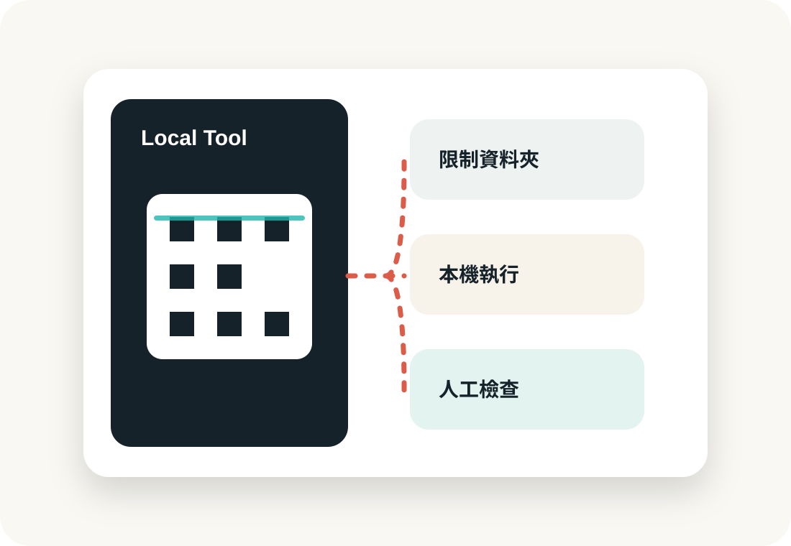

01 / Ask Better
先把問題說清楚，AI 才能真正幫上忙。
從第一堂開始，學員練習把模糊問題拆成角色、任務、背景與格式，讓 AI 回答不只是熱鬧，而是能被拿來修改與使用。


01 / Ask Better
從第一堂開始，學員練習把模糊問題拆成角色、任務、背景與格式，讓 AI 回答不只是熱鬧，而是能被拿來修改與使用。

02 / Make Visible
歌曲、影片、分鏡、字幕與短片，讓 AI 不只停在聊天框，而是變成可以分享、可以展示的學習成果。

03 / Work Safer
從 Codex、OCR 到本地 QR Code 小工具，課程後半段的重點是：用 AI 改造流程，同時保留人工檢查與資料安全。

Course Journey
課程後半段從工具教學轉向真實需求，學員開始把 AI 用在排班、音樂、影片、文件整理與本地小工具。
認識 AI、帳號登入、提示詞四要素與隱私觀念。
C02 比較三大 AI 助手ChatGPT、Gemini、Claude 同題比較，建立判斷答案品質的習慣。
C03 AI 會議專案室角色準備、會議錄音、正式紀錄、NotebookLM 心智圖與簡報影片成果。
C04 真實排班案例把複雜規則說清楚，讓 AI 追問缺漏並輸出可檢查的表格。
C05 Suno 音樂創作歌詞、曲風、Custom Mode、封面與授權觀念。
C06 期中專案啟動回顧前五堂，整理個人需求，學會用分支、摘要與流程拆解啟動自己的 AI 專案。
C07 AI 工作流實驗場Excel ChatGPT 增益集、剪映 Seedance 影片生成、Codex 小工具與字幕流程。
C08 Codex 製片廠讀取照片資料夾，輸出橫式、手機直式、活潑版招生影片與分鏡文件。
C09 AI 急診與安全控制中心現場案例問診、OCR 流量管理、Codex 權限、本地工具、本地模型與成果發表準備。
C10 成果發表與結業用網站回顧旅程、展示成果，並讓學員留下匿名學習回饋。
Works & Examples
這裡不只放漂亮成品，也展示課堂怎麼把真實問題拆開、怎麼請 AI 追問、怎麼檢查結果，最後變成可以使用的作品與工具。
C04 表格 / 網頁工具
從口述規則、AI 追問、缺漏修正，到做出可切換情境與匯出 CSV 的排班系統。
C05 音樂
學員用 Suno 產出生日、家庭、銀髮族、生活心情等歌曲作品，並比較歌詞、曲風與修改方式。
C08 影片
用 Codex 整理素材、產生分鏡、輸出橫式與直式影片版本。
C09 安全 / 工具
用本地 QR Code 小工具示範：資料不一定要交給陌生網站處理。
C03 會議 / NotebookLM
同一包會議資料，練習產出摘要、心智圖、測驗、簡報與影片摘要。
C07 Excel / 工作流
從表格、文件、影片與工作流程出發，練習讓 AI 產出後仍能被人檢查與接續使用。
Learning Map
這門課的核心不是背工具，而是學會把問題講清楚、把流程拆開、把結果檢查回來。
會議紀錄、長文摘要、LINE 訊息整理、提示詞改寫。
排班、名單、Word/Excel 自動化、格式化輸出。
AI 音樂、影片分鏡、字幕、招生短片與成果展示。
Codex、本地小工具、Token 管理、OCR 與資料夾權限。
About
這是嘉義市婦女學苑 AI 入門應用班的課程回顧與成果展示網站。網站會先以 C01 作為內容模板，再逐堂補上 C02-C10 的實際上課內容、操作範例與成果作品。